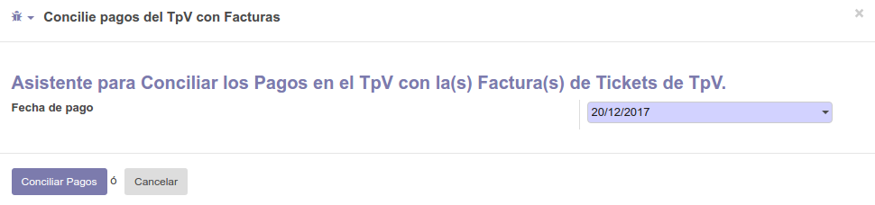

Facturacion Global CFDI 4.0
Complemento para Facturas con Ventas al Publico en General
Este modulo permite incorporar la Facturacion Global tanto en Ventas como en Terminal punto de Venta.
Podemos complementar este modulo utilizando l10n_mx_sale_payments el cual incorpora la posibilidad de utilizar pagos en las ventas y conciliarlas en la Factura.
Una Factura Global debe cumplir con ciertos requisitos como son:
- Uso de CFDI --> Por Definir
- Forma de Pago --> Pago una sola Exhibicion
- Entre Otros
Este modulo automatiza estos valores, agregandolos de forma automatica.
Configuracion
Debemos tener Habilitado un Cliente como Facturacion Publico en General
Debemos tener creado un Producto para facturacion de Publico en General, en caso de tenerlo al realizar la primer factura por este medio, se creara de forma automatica.
La ultima configuracion es habilitar una Unidad de Medida para publico en general, puede ser Piezas o la unidad de Medida necesaria para la Factura Global llamada Actividad, si no existe tambien se creara de forma automatica.

Desde Pedidos de Venta tenemos un asistente de Facturacion Global, debemos seleccionar los Pedidos a Facturar, si el cliente del Pedido es el configurado en el punto inicial, marcara la opcion Facturacion Publico en General, podemos tambien facturar a Publico en General Clientes que no requierieron Facturas.
El mismo asistente veremos desde Pedidos del Punto de Venta.
Para el Punto de Venta, solo debemos Conciliar los Pagos desde el asistente que veremos en la imagen y en caso de Pedidos de Venta normales, validamos la factura y aplicamos los pagos.
